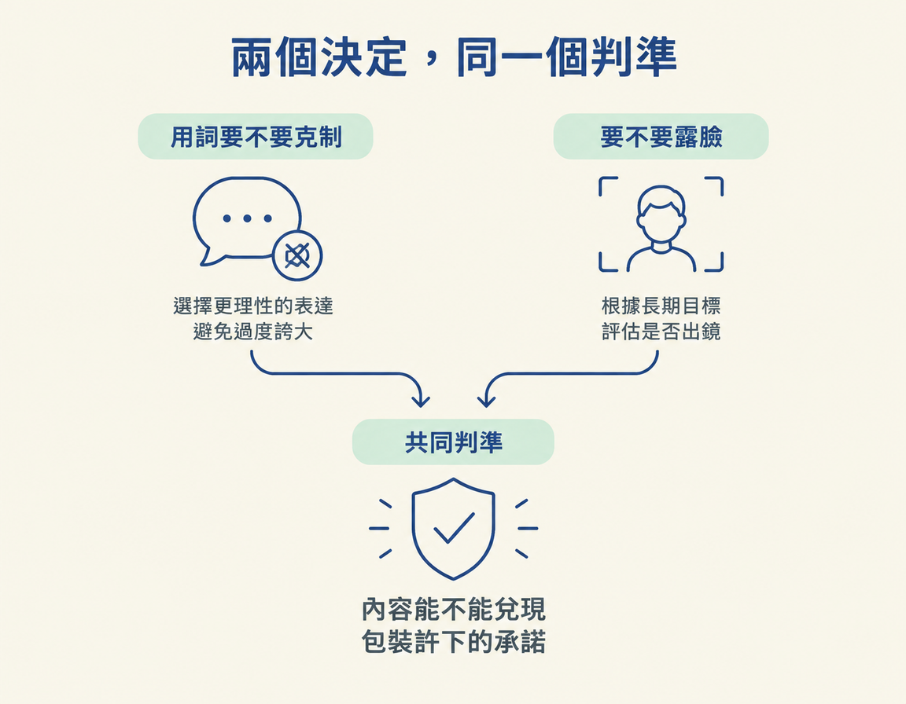
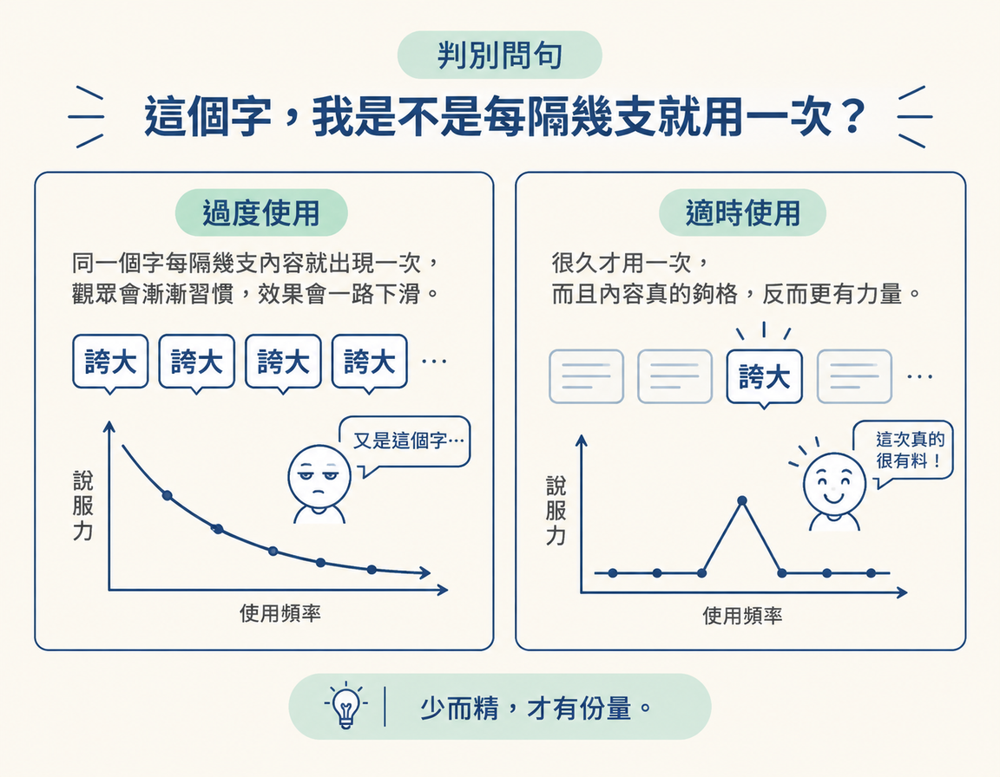
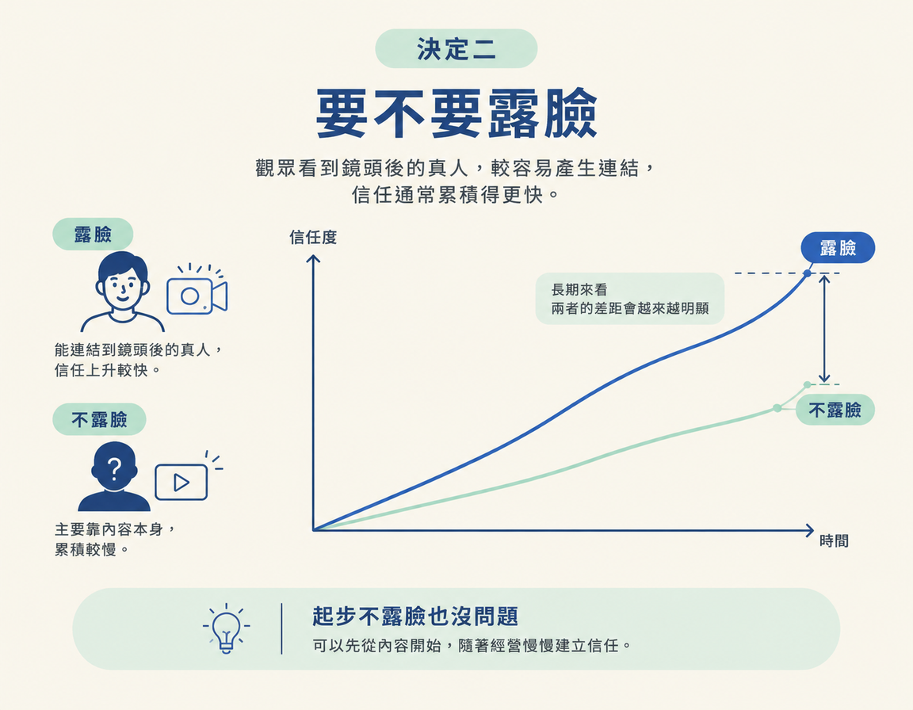

替自己的內容做兩個長期決定：誇大字眼要不要少用，以及要不要露臉來加快建立信任。
前四節談過「包裝是一個承諾」，也看過三種風險：內容和包裝有落差，會損害信任；誤導性內容可能被平台打壓；產量太高，也可能慢慢磨損名聲。
現在來到 Trust and Truth 的最後一步。這一步要用前面學到的觀念，做出兩個長期選擇：怎麼用詞，以及要不要露臉。最後，你會有一套適合自己的判斷方式，可以長期用下去。
這兩個選擇不一定會改變一兩支影片的表現，卻會影響觀眾長期怎麼看你。課程把用詞克制當成個人偏好，把露臉當成長期建議。兩個決定背後的共同判準是：你能不能兌現包裝許下的承諾。

先看用詞。你可以繼續使用常見的誇大字眼，也可以刻意少用，只在內容真的符合時才使用。
| 繼續用誇大字眼 | 刻意克制 | |
|---|---|---|
| 短期效果 | 立刻吸睛，看起來很厲害 | 可能顯得比較不起眼 |
| 課程的做法 | 較少採用 | 少用，只在真的夠格時使用 |
| 觀眾的解讀 | 容易讓人想到過度承諾 | 比較容易相信你說的是真的 |
| 長期結果 | 字眼愈用愈沒力 | 字眼愈用愈有份量 |
課程用作者自己的用詞習慣來說明什麼叫克制。他很少用 “insane”（瘋狂）這個字，只有在工具真的很厲害時才會用。許多行業和利基都有一些被過度使用的字眼。用得太頻繁，觀眾很快就會把它們和「過度承諾」聯想在一起。
因此，課程認為點擊誘餌標題對創作者弊大於利。這類手法初期可能有效，但如果想長期經營，之後就得調整。
你可以問自己：這個字是不是每隔幾支內容就出現一次？如果是，觀眾可能早已習慣，這個字對你就失去效果，甚至讓你聽起來像在吹噓。

反過來說，如果一個月才用一次，而且內容真的配得上這個字，它就比較有力量。
克制不代表永遠只能用平淡的字。如果工具或方法真的達到那個水準，而你平常又很少用這個字，那麼用一次就是準確描述，不是誇大。
所以，克制不是「不能用重話」，而是「用得少、用得準」。判準仍然是：內容能不能兌現這個字所許下的承諾？
第二個選擇是：長期經營時，要不要讓觀眾看到你的臉？
| 長期露臉 | 長期不露臉 | |
|---|---|---|
| 建立信任 | 較快，觀眾能連結到真人 | 較慢，主要靠內容本身 |
| 起步門檻 | 較高，需要克服上鏡的顧慮 | 較低，拿起手機就能開始 |
| 需要的技能 | 要練習面對鏡頭說話 | 可以用螢幕或素材呈現內容 |
| 之後的彈性 | 不需要再轉換方式 | 準備好時可以再轉換 |
課程的立場很清楚：一開始不露臉完全沒問題。作者自己也是先不露臉，靠內容起步，後來才轉變。不過，如果你打算長期經營，露臉對建立信任「有效得多」（much more effective）。
道理很簡單：觀眾看到鏡頭後面的真人，比較容易和那個人產生連結。看得到創作者，信任通常累積得更快。

要不要開始露臉，可以先問自己兩件事。第一，你現在是在做短期測試，還是打算長期累積？如果是長期經營，露臉帶來的信任優勢會更明顯。
第二，你願不願意開始練習面對鏡頭？如果願意，愈早開始練，這項技能就愈早能派上用場。
「不露臉也可以」不代表任何情況下都適用。如果你的服務很依賴觀眾信任你這個人，例如顧問、陪跑或一對一教學，長期完全不露臉，建立信任就會更費力，因為少了直接讓觀眾認識你的方式。
不過，面對鏡頭說話是一項可以學會的技能，你也可以等準備好再開始，不必現在就逼自己。重點不是「一定得露臉」，而是：準備好之後，露臉能讓長期信任累積得更快。
被用濫的字，等到內容真的夠格再用。如果你打算長期經營，而且主題很依賴信任，就考慮露臉。兩個選擇都回到同一個判準：內容能不能兌現包裝許下的承諾？兌現得到就說，兌現不到就別許。
長期信任要做兩個決定：誇大字眼要不要克制，以及要不要露臉。字眼用得少、用得準，才有份量。用得太濫，觀眾容易覺得你在過度承諾。起步時露不露臉都可以，但長期來看，讓觀眾看到真人，信任累積得更快。面對鏡頭也是可以練習的技能。兩個決定的共同原則是：包裝許下的承諾，內容要兌現。
到這裡，Wk3 的品質關卡就補齊了。你已經能做出內容、寫得像自己，也知道怎麼避免讓產量反過來損害信任。接下來 Wk4 要處理最後一哩路：如何跨平台、穩定地發布內容。